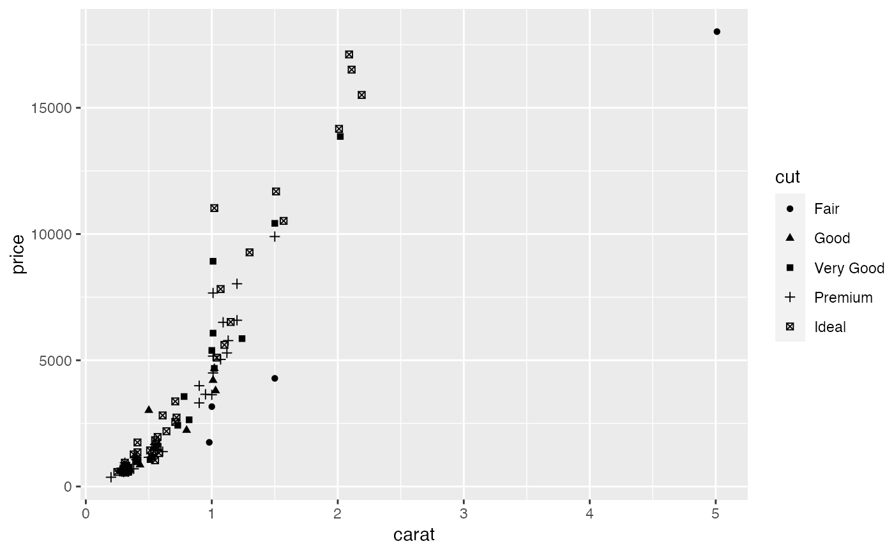
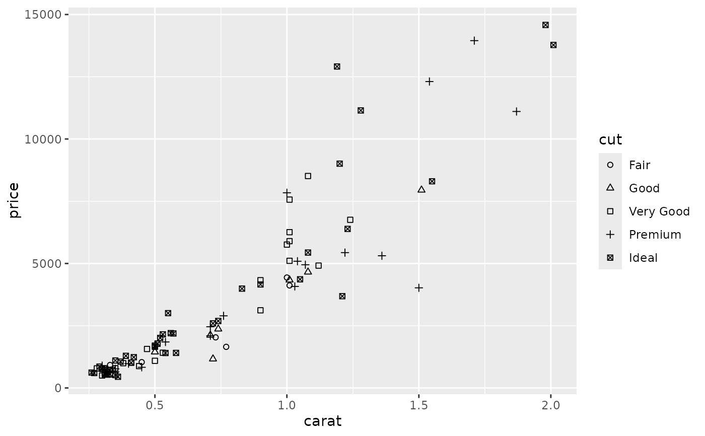
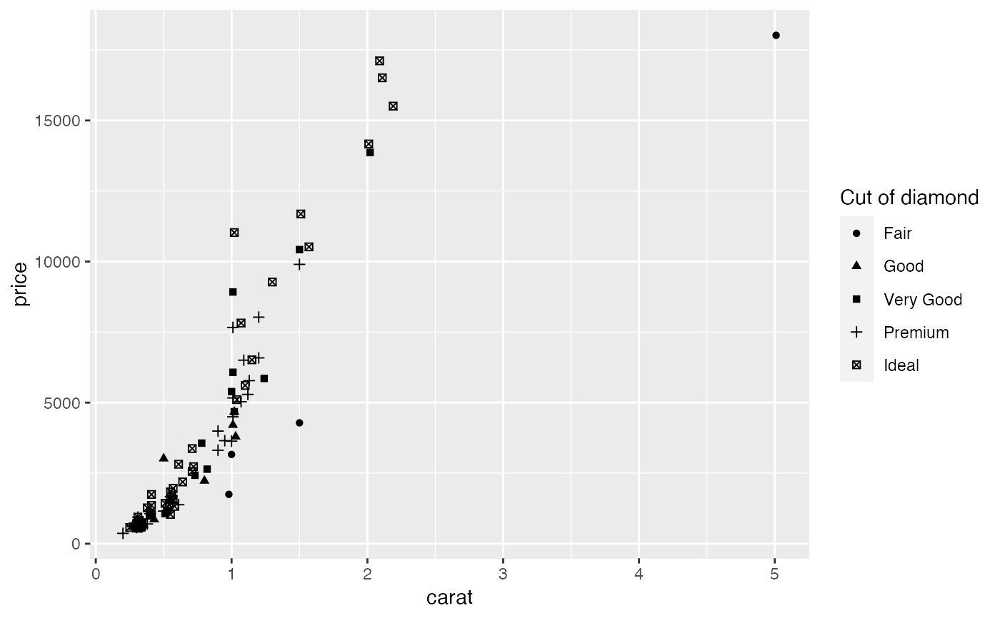
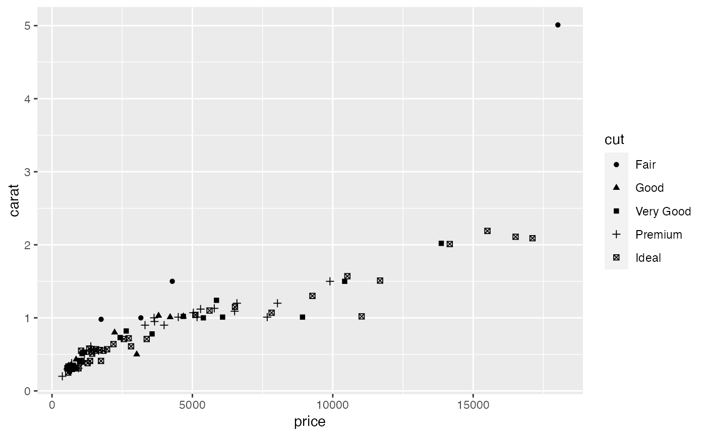
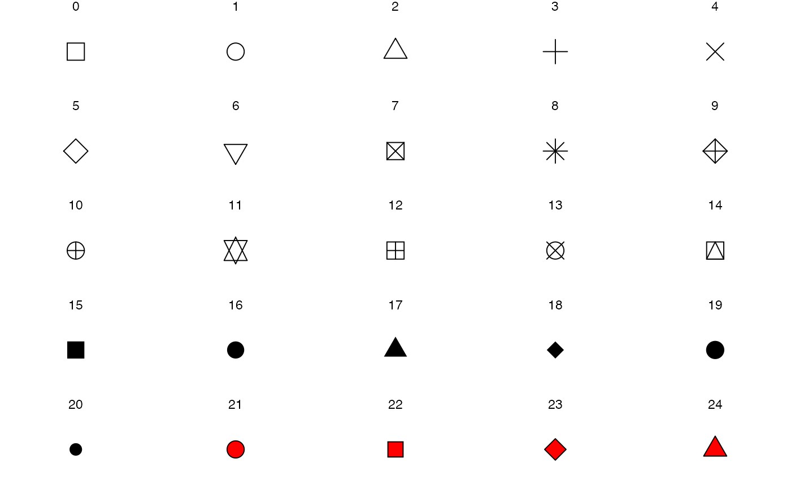

scale_shape() maps discrete variables to six easily discernible shapes.
If you have more than six levels, you will get a warning message, and the
seventh and subsequent levels will not appear on the plot. Use
scale_shape_manual() to supply your own values. You can not map
a continuous variable to shape unless scale_shape_binned() is used. Still,
as shape has no inherent order, this use is not advised.
Arguments
- name
The name of the scale. Used as the axis or legend title. If
waiver(), the default, the name of the scale is taken from the first mapping used for that aesthetic. IfNULL, the legend title will be omitted.- ...
Arguments passed on to
discrete_scalebreaksOne of:
limitsOne of:
NULLto use the default scale valuesA character vector that defines possible values of the scale and their order
A function that accepts the existing (automatic) values and returns new ones. Also accepts rlang lambda function notation.
dropShould unused factor levels be omitted from the scale? The default,
TRUE, uses the levels that appear in the data;FALSEincludes the levels in the factor. Please note that to display every level in a legend, the layer should useshow.legend = TRUE.na.translateUnlike continuous scales, discrete scales can easily show missing values, and do so by default. If you want to remove missing values from a discrete scale, specify
na.translate = FALSE.na.valueIf
na.translate = TRUE, what aesthetic value should the missing values be displayed as? Does not apply to position scales whereNAis always placed at the far right.aestheticsThe names of the aesthetics that this scale works with.
minor_breaksOne of:
NULLfor no minor breakswaiver()for the default breaks (none for discrete, one minor break between each major break for continuous)A numeric vector of positions
A function that given the limits returns a vector of minor breaks. Also accepts rlang lambda function notation. When the function has two arguments, it will be given the limits and major break positions.
labelsOne of:
NULLfor no labelswaiver()for the default labels computed by the transformation objectA character vector giving labels (must be same length as
breaks)An expression vector (must be the same length as breaks). See ?plotmath for details.
A function that takes the breaks as input and returns labels as output. Also accepts rlang lambda function notation.
guideA function used to create a guide or its name. See
guides()for more information.callThe
callused to construct the scale for reporting messages.superThe super class to use for the constructed scale
- solid
Should the shapes be solid,
TRUE, or hollow,FALSE?
See also
The documentation for differentiation related aesthetics.
Other shape scales: scale_shape_manual(), scale_shape_identity().
The shape section of the online ggplot2 book.
Examples
set.seed(596)
dsmall <- diamonds[sample(nrow(diamonds), 100), ]
(d <- ggplot(dsmall, aes(carat, price)) + geom_point(aes(shape = cut)))
#> Warning: Using shapes for an ordinal variable is not advised

d + scale_shape(solid = TRUE) # the default
d + scale_shape(solid = FALSE)

d + scale_shape(name = "Cut of diamond")

# To change order of levels, change order of
# underlying factor
levels(dsmall$cut) <- c("Fair", "Good", "Very Good", "Premium", "Ideal")
# Need to recreate plot to pick up new data
ggplot(dsmall, aes(price, carat)) + geom_point(aes(shape = cut))
#> Warning: Using shapes for an ordinal variable is not advised

# Show a list of available shapes
df_shapes <- data.frame(shape = 0:24)
ggplot(df_shapes, aes(0, 0, shape = shape)) +
geom_point(aes(shape = shape), size = 5, fill = 'red') +
scale_shape_identity() +
facet_wrap(~shape) +
theme_void()
